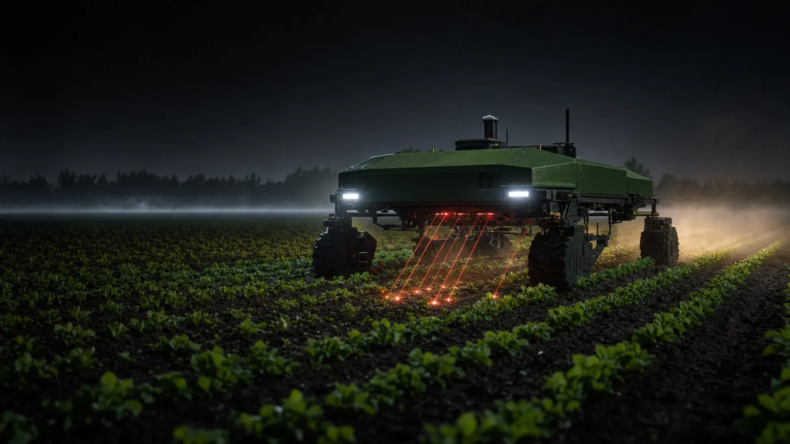
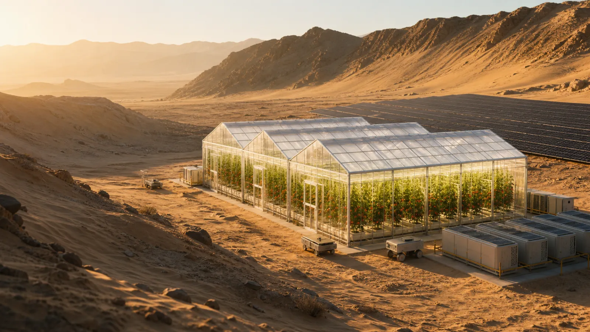
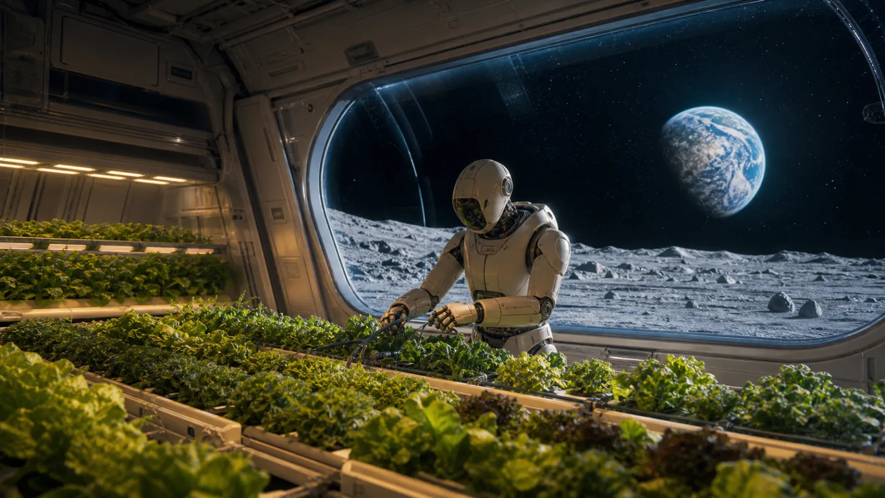

🚜 PHYSICAL AI × EXPERIENCE
私たちは、野菜を売りません。
買えなかった体験を売ります。
Agri Port — アプリDE農業。フィジカルAIを通じて、誰も買えなかった「農業への参加」を商品にする。
HOOK — 経験の希少性
最後に、土に触れたのは
いつですか?
都市に住む私たちは、食の生産から完全に切り離されました。田植えも、収穫も、一生しないまま終わる人が大半です。
そして人は、経験できないものにこそ、希少性を感じます — モノからコトへ、消費はもう動いています。
0%
日本の都市部人口比率 —
ほとんどの人に「畑」はもうない
コト消費へ
体験ギフト・推し活・聖地巡礼 —
財布は「経験」に開いている
出典: World Bank(都市人口比率・2023)
PROBLEM — その体験の、作り手が消えていく
農業は「誰もが経験できないもの」
になっていく。
耕す人は25年で57%減り、平均67.6歳。20年後は30万人 — 体験の供給者そのものが消えていきます。
放置すれば失うのは体験だけではありません。手取り48.5%・価格決定権なし・豊作は畑に廃棄 — 食の土台ごと崩れていく。
出典: 2025年農林業センサス(概数値)/ 食品流通段階別価格形成調査(農林水産省)
BREAKTHROUGH — フィジカルAIの活路
フィジカルAIは、
労働と土地を切り離す。
ロボットが「現地に住む身体」の代わりになる — 収穫ロボは従量課金で、ヒューマノイドは自動車工場で、もう働いています。
ここで私たちは気づきました。労働を切り離せるなら、「体験」だけを取り出して、世界中に配れるのではないか。
労働は、切り離す。
判断と体験は、あなたに返す。
SOLUTION — 「参加」の中身を3層で設計する
観る・決める・操る。
👀 観る — 毎日の接点
自分の区画をライブ観察。AIが雑草を検出し、除去する瞬間まで見える。飽きさせるのは映像ではなく、季節のドラマ — 発芽・台風・出穂・収穫が本物の物語として進む。
🧠 決める — あなたは監督になる
「台風接近。早期収穫か、粘って糖度を取るか」— AIが選択肢とトレードオフを提示し、あなたの区画はあなたが決める。結果は収穫の味で返ってくる。
🕹 操る — 希少体験のプレミアム
フィジカルAIの身体を5分借りて、東京の自宅から新潟の棚田を耕す。操作ログは艦隊の教師データに還流 — 遊びがAIを賢くする。
お金を出して終わりのクラファンとは違う。シーズン中ずっと、判断と体験で関わり続ける — これが私たちの「農業への参加」です。
LIVE DEMO — いま触れます: agri-port.pages.dev
「観る」は、もう動いています。
🤖 ロボット視点 — 雑草をAI検出、農薬ゼロで除去
🚁 ドローンNDVI — 生育ムラ検出→追肥を自動予約
🦿 ヒューマノイド — 選果・箱詰めから配送へ
INTERACTIVE — 「決める」のデモ
台風6号、接近中。
あなたの区画は、どうしますか?
A. 今週末に早期収穫する
糖度は約10%落ちるが、収量は確保。AIの試算: 損失リスク5%。手堅い監督の選択。
B. 粘って、完熟を待つ
台風が逸れれば過去最高の糖度。直撃なら3割落果。AIの試算: 損失リスク35%。攻める監督の選択。
AIアグロノミストが選択肢とリスクを出し、決めるのはオーナーであるあなた。隣の区画と味が違うのは、判断が違ったから — 収穫の物語は、あなたの采配の記録になります。
RARE EXPERIENCE — 「操る」= 買えなかった体験
東京のリビングから、
新潟の棚田を耕す。
世界の誰もまだ買えない体験を、最初に売ります。今日は北海道のトマト、来週はケニアのバナナ — フィジカルAIの身体を5分借りる。
操作ログは模倣学習の教師データになり、遊んだ分だけ、艦隊が賢くなる。
THE LADDER — 体験の希少性は、高度とともに上がる
体験の値段は、
そこに行けない距離で決まる。
 STEP 1 棚田の田植え
STEP 1 棚田の田植え
STEP 2 夜のレーザー除草を操縦
STEP 3 砂漠ポートの水管理
STEP 4 月面農場の、最初の水やり
無人島、砂漠、そして宇宙 — 人が住めない場所ほど、フィジカルAIしか行けない場所ほど、体験は希少になる。Agri Portはその体験の唯一の入口になります。
BUSINESS — エンタメの財布で、社会課題を解く
遊んだ分だけ、
国土が再稼働する。
3層の財布
オーナー権(1口1万円)+体験課金(操縦枠)+産直リターン
体験の購入が、そのまま農地の運営費になる
0%
生産者の手取り(市場流通は48.5%)
中抜きの30ptが地代・分配・ロボ運用費に
廃棄ゼロ設計
出資=前払購入 — 作付け前に完売
豊作は暴落ではなく上振れに
クラファンとの違いは構造です — 財布だけの参加ではなく、判断と体験で関わり続ける参加。そのお金が、担い手30万人時代の農地を回す燃料になる。
出典: 農水省 令和4年度 食品流通段階別価格形成調査
IMPACT — 体験の向こう側
あなたが遊んだ谷に、
人と実りが戻る。
72歳の田中さんの田はポートになり、地代が入る。あなたの操縦した除草ロボが守った新米が、秋にあなたの家に届く。
お金は都市から地方へ。労働はロボットへ。体験と野菜と風景は、あなたへ。
PLANETARY — 体験の供給地は、地球全部
世界の眠る土地・約1億haが、
体験の舞台を待っている。
高齢化はEU・韓国・中国が日本を追い、世界の耕作放棄地は約1億ha。日本で磨いたこの仕組みは、そのまま世界に渡せます。
遊び場が増えるほど、食で満たされる土地が増える — 飢餓6.7億人への、エンタメからの回答です。
出典: Zheng et al., Nature Communications(2023)/ FAO SOFI 2025 / Eurostat / 韓国統計庁
TEAM — なぜ、私たちか
空 × 土地 × デジタル。
✈️ 空 — JAL
航空オペレーションと地方路線網、交流人口の知見。ドローン運航管理と「ポートに人と物を運ぶ」動脈を設計する。
🏠 土地・建築 — 大和ハウス工業
遊休地開発・施設建築・農業施設の自動化。「ポートを国土に建てる」物理実装を担う視点。
💻 デジタル — 富士通
社会インフラSIと農業ICT・AI。艦隊とデータをまとめて動かす仕組みを組む視点。
体験を運び、舞台を建て、艦隊を動かす — 3つの産業の現場から集まった3人で、この構想をつくりました。
VISION 2040
月面農場の「最初の水やり権」を
売る日まで、農業を遊び倒す。

agri-port.pages.devいま、あなたのスマホでポートを観察できます — Agri Port(アプリDE農業)